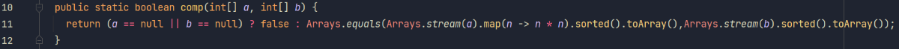

Baffi Bálint
my name is, and I am in the job seeking period after having cleared the Junior Software Developer course at Green Fox Academy specialized in Java backend development. This is my personal webpage aiming to introduce myself and showcase my skills by presenting my individual work.
- - -
Algorithmic exercises
Algoritmic exercises are significant and indispensable part of my daily routine as a programmer. They keep my routine of Java "in my hand" and offer a great opportunity for personal development. I especially love the site CodeWars, there I was already able to learn a lot (about Java streams for example) checking out other programmers' solutions. I find especially one-liner stream and regex solutions really inspiring.
While earlier I completed this tasks the way I could on my own and by heart and as fast as possible (preparing for Green Fox Academy final exam entry), recently I think about what I need and research it. This way I gradually improve myself for example regarding streams and regex. For the whole list of my solutions check out my GitHub repository. Below is one of my recent (2022/09/05) solution, one of my first one-liners. This code returns a boolean depending on whether array b contains precisely the squares of a in voluntary order.
- - -
Programming basics
I wrote these programs at the beginning of the training. Although they certainly do not reflect the way I code today after having cleared the bootcamp and many coding challenges on Hackerrank and Codewars I still find it important to show these pieces of work because my genuine passion for programming is very well expressed by them.
OOP
Snake

I created a multiplayer implementation of the popular game. It is fun to play it so that it occupied my son for half an hour - I can call it my first not self-purposed code. At that time it was my most object-oriented code.
UMLALgorithms, structures
Create a random map for a game

Walls are represented by "3"-s and available areas by zeros in the above matrix. Task: put down x walls on an mxn map randomly in such way that any available field can be reached from any.
code of recursive algorithm, the cycle splitting it up and the main code itselfSierpinski carpet

After landing a recursion code successfully in the minesweeper game I felt it was high time to create a fractal. It ended up pretty well packed.
kódMinesweeper

.png)
Although it seemed to be easy from OOP point of view, while coding the expansion of zero fields I managed to implement such delicacies as four times nested iteration, XOR operator, recursion.
code about above delicaciesTic-tac-toe


Computer finds moves based on following priorities:
- 1) Wins in one move
- 2) Prevents human to win in one move
- 3) Select a random move.
Disclaimer: I coded this the very evening we learned about OOP concept. Of course it could be done in a much more decent way, but I leave it here as a good memory :)
code